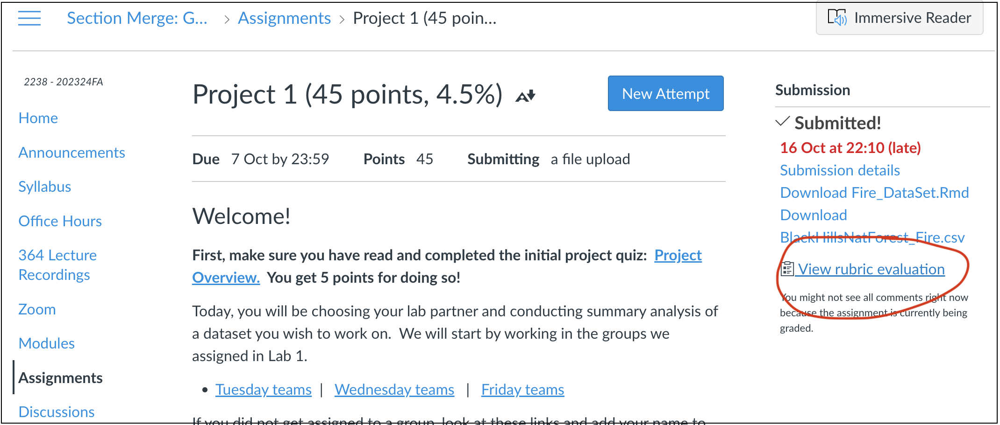
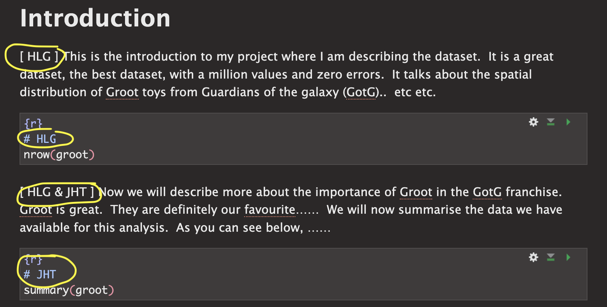
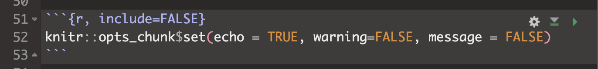

GEOG 364 Project Part 2
Dr Greatrex
2023-10-17
Welcome to part 2 of your projects!
The aim of this week is to continue to work on your reports (following the guidelines below), get your data read into R if you haven’t already, make it ‘spatial’ and to do some point pattern analysis.
Step 1| Reflect on feedback

Go to the assignment page on Canvas and take a look at your feedback for Lab 1. See the screenshot above for where to click. https://psu.instructure.com/courses/2260204/assignments/15503679
Now, click to read some common issues in Project 1
ISSUE 1: I couldn’t read in my data:
I’ve tried to provide custom feedback here to get your dataset
working in R. See the comments. If it still doesn’t work, talk to a
teacher/TA.
ISSUE 2: I lost marks on style because I didn’t use a template:
Templates let you easily make a variety of professional documents.
They also do things like automatically generate a table of contents.
Please see this tutorial on how to make one: https://psu-spatial.github.io/Geog364-2023/in_Tutorial03LabSetUp.html#Templates
ISSUE 3: I didn’t provide enough background:
Here I was looking to see details (minimum) on:
The background of the topic
The source of the data
How it was collected
What the columns mean (& units).
So if you only added a few sentences then you didn’t get full marks
(although often still gained an A overall). More guidance in this week’s
lab below as to how to improve.
ISSUE 4: My data was inappropriate:
The main issue I saw was that a few people chose global data-sets
where the clustering didn’t look like something that could be used in a
point pattern analysis. This isn’t the end of the world, as I requested
either a single country or to have at least 50 points within a single
country/region, but check your comments as it’s important that we subset
to a more appropriate area. Look at my individual comments here.
ISSUE 5: It wasn’t clear who did what
There were two big issues here. The first wasn’t stating clearly at the top of your report if there were one or two people working on this (and either your names or email-ID). This made grading hard when I had to spend time working out if you were working solo or not.
The second was that for some of you, it wasn’t clear within your
write-up who did what. As described in your initial quizzes, I’m looking
for something like this:

Step 2| Improve report readability
2A. Load your report
We are using the same report as for Project 1. So open your Project 1 folder/.Rproj and open your report. Scroll to the top!
2B. Add your names/email ID to the top
At the top of your report in italic, add your scenario - and make sure to add your names/email ID if you are working as a pair. Otherwise it’s really hard to match them on Canvas.
You can also add an author line in your YAML code at the top
2C. Add Code chunk options
First, let’s get rid of all of the ‘library loading text’ that happens when you press knit. Underneath your YAML code and at the top of your report, copy/paste this EXACT code chunk. If something like it already exists, replace it with my version.
Now edit the top of the code chunk itself. Change {r} to {r, include=FALSE}. For example:

Press knit. That code chunk should will disappear, but it will force all the other code chunks to show no warnings or messages. If your report before was printing out all of the library outcomes, then it should now look more tidy.
There are a lot of other code chunk options out there, from pre-defining the size of figures, to changing colors. See this tutorial for more: https://yihui.org/knitr/options/
2D. Tidy up your report & code
Now work through any code you already have and tidy up:
Remove any code that uses interactive commands like “install.packages()” or “View()” or “file.choose()”
Remove any code that prints out entire datasets. (replace them with
head(dataset)to see the first 6 lines)Move all your library() commands to the library code chunk at the top.
Generally tidy up. Need any more/better headings/sub-headings? Done a spell check? Does it look good when you knit?
Step 3| Choosing an audience
I want these reports to be something you could show on Github or to a future employer/grad-school. This means that (although I know it’s not a writing course), of you need to add more details about your topic.
The easiest way to do this is to write your report up for some imaginary senior person or imagine you’re writing a blog for a data science website.
For example:
You might analyse sports stadium data for a new billionaire who wants to build a new stadium in a new town but hasn’t decided where.
You might analyse forest fire data in the Black Hills for a new leader of the Crazy Horse National Monument and University.
The 2002 class of University of California is suing the college because of high air pollution - and you are the independent analyst called in to arbitrate. Or maybe you’re exploring data to go into a newspaper expose.
You’re writing an article for a newspaper of your choice, or www.flowingdata.com
Your stories can be imaginary, outlandish and ridiculous! Maybe you’re a writing a report for aliens from Mars about how to avoid UFO sightings. Or you’re writing a report for President Obama in planning a new initiative, or a report for your grandma Tegwyn1 in deciding where to retire... I really don’t care :) What I’m looking for is a good reason for you to look at your dataset and to define a ‘useful’ spatial and temporal extent.
This approach is also useful because it forces you to choose
a useful study area.
In the California pollution example,
the story makes sense that you would choose data from 2002 and an area
covering the California campuses.
Imagine your person is new to the job. or imagine your report will be published online.. so you need to explain the topic to them from scratch. They’re not going to know any background information or jargon.
Finally, in each case you don’t have to answer a specific research question. “Spatially exploring dataset YY to provide information on……” is enough.
If you want to write in a different language with an English translation below, then that is also fine.
HELP! I can’t think of anyone..
If you are stuck, ask around in the lab! Or ask chat GPT…..

3.1 Your challenge
- Choose a potential person/reason for writing your report, following
the guidelines above.
- Now consider why that person might care about this, make up a
scenario. Consider what language would be professional and how you can
introduce the dataset to them.
Now include more information in your introduction/background.
For individual projects:
I’m looking for at least 200 words in your introduction/background (before you read in the data) including at least one image and one cited & relevant research paper/report. To find relevant research papers/reports typing your subject into https://scholar.google.com/ (e.g. building stadiums, fire impact in New Zealand..)
This should include background about the topic itself (for style/level, imagine you are writing a blog)
You should also include a paragraph on the limitations of this dataset for solving their issues. For example, maybe you only have one year of data (or your data was collected during COVID), or the locational fallacy/non-uniformity of space is going to impact your analysis.
I also want a bullet point list of the columns in your dataset, for each one explaining what it is, what its name is and units. If your data is really messy or has lots of columns you don’t need, come back to this after you have tidied up in Step 4.
If you’re working with a lab partner
I’m looking for at least 350 words in your introduction/background (before you read in the data) including at least TWO images and TWO cited & relevant research papers/report. To find relevant research papers/reports typing your subject into https://scholar.google.com/ (e.g. building stadiums, fire impact in New Zealand..)
This should include background about the topic itself (for style/level, imagine you are writing a blog).
You should also include a paragraph on the limitations of this dataset for solving their issues. For example, maybe you only have one year of data (or your data was collected during COVID), or the locational fallacy/non-uniformity of space is going to impact your analysis.
I also want a bullet point list of the columns in your dataset, for each one explaining what it is, what its name is and units. If your data is really messy or has lots of columns you don’t need, come back to this after you have tidied up in Step 4.
Step 4| Reading in your data
Most of you have now managed this. Just in case, here is a new tutorial that should go through all the possible data types. Tutorial 5 - reading in data.
Also, if you talked about issues in your project 1, I am custom answering each person - so check canvas!
If yours isn’t in the tutorial or STILL doesn’t work, try googling or ‘chatGPT’ing’ a query like “read .asds data into R” and you’ll probably find a tutorial.
Step 5| Data wrangling (important)
Even if you have started to do some analysis, I want you to first look at this section. There are certain things that you can do to make your data more manageable. These include removing missing values, renaming columns, sub-setting the columns you want, looking at a smaller spatial area etc etc.
These are all included in Tutorial 6 - Data Wrangling.
Please follow Tutorial 6, then write up a paragraph under a heading called Data Wrangling to explain everything you did.
Step 6| Spatial wrangling
We now want to make a range of spatial versions of your data type, and sort out map projections.
Step 7| Exploratory analysis
Get from 2022
Step 8| Point Pattern Analysis
You are not being graded on this until Project 3, but try some of the techniques you learned in Lab 3. For example, you could conduct a quadrat analysis, a nearest neighbour analysis, make some Kernel smoothed plots, conduct a Ripley’s K analysis.
To see an excellent example of how to integrate these into your write up, see Wartman’s analysis of earthquake damage.
https://psu.instructure.com/courses/2260204/files/folder/4_General%20Readings?preview=155077626
You don’t need to write this much! But see how they talk about the output from different techniques..
(my auntie’s name)↩︎